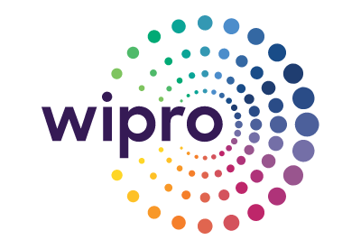
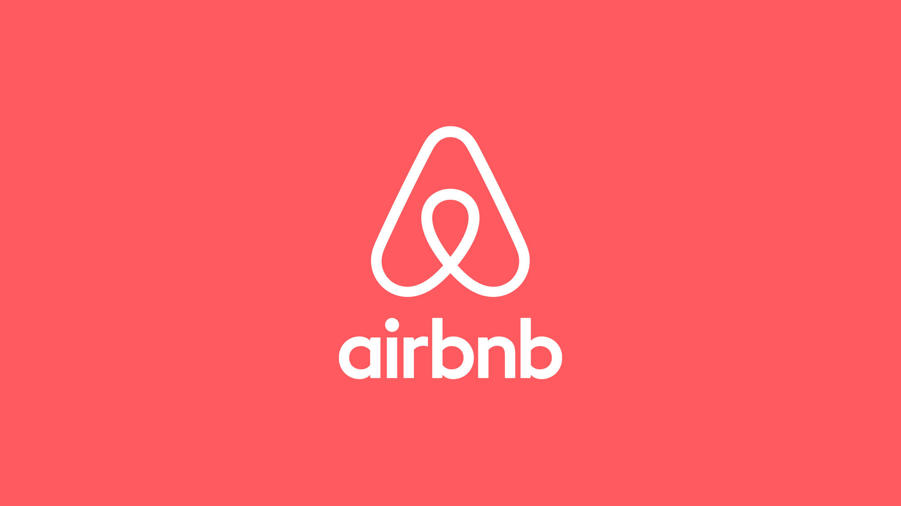
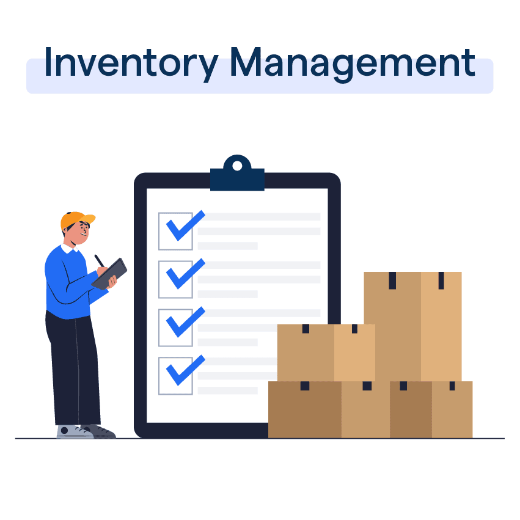
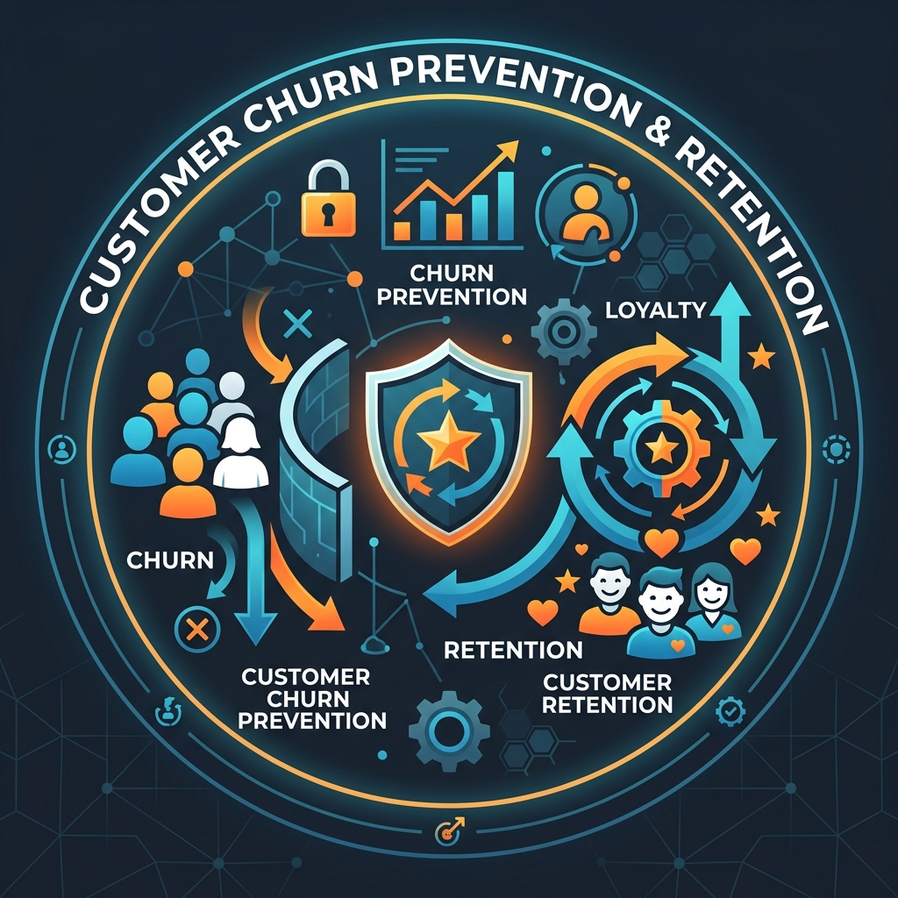
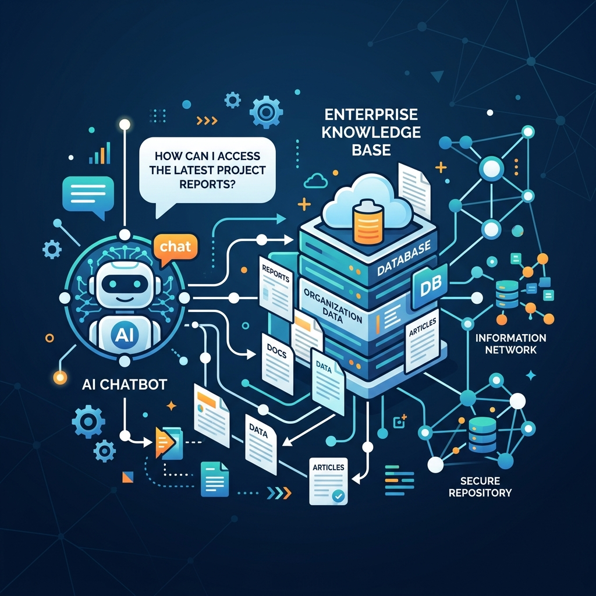

Data & Performance Analyst, Project Management – CPRD Sector
Jan 2024 – Jan’2025Capgemini India, Bengaluru, India
Data & Analytics professional with a proven track record of transforming complex datasets into actionable business insights using Python, SQL, and Power BI. Adept at building automated data pipelines and interactive dashboards to drive data-informed decision-making across multiple project domains.
My core proficiency lies in utilizing the Microsoft Power BI and Excel ecosystem to design and deploy compelling interactive dashboards, including advanced DAX functions and Row-Level Security (RLS).
I am a passionate data enthusiast with a keen eye for leveraging data-driven insights to solve complex business problems, transforming raw data into actionable knowledge.
I am expanding my skill set into Machine learning and Deep Learning to apply advanced neural network architectures and solve complex, real-world problems.
Building responsive and intuitive user interfaces with modern HTML, CSS, and JavaScript to create engaging web experiences.
Proficient in SQL, including joins, aggregate functions, subqueries, and advanced window functions for complex data manipulation.
Passionate about sports, I enjoy the strategic thinking of indoor games like Chess and the dynamic energy of outdoor sports like Cricket and Badminton.
Capgemini India, Bengaluru, India
Capgemini India, Bengaluru, India

Wipro Technologies, New Delhi, India











